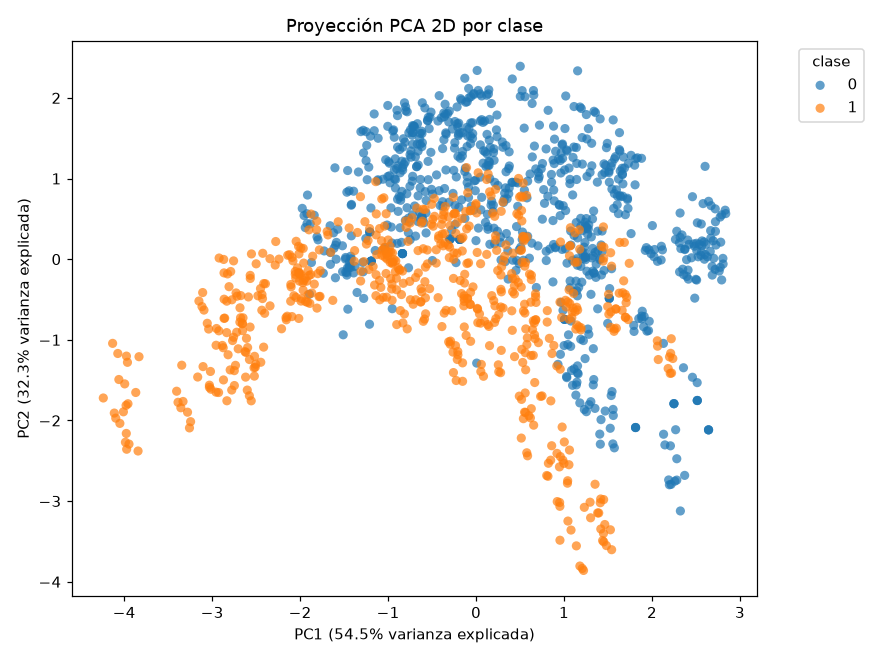
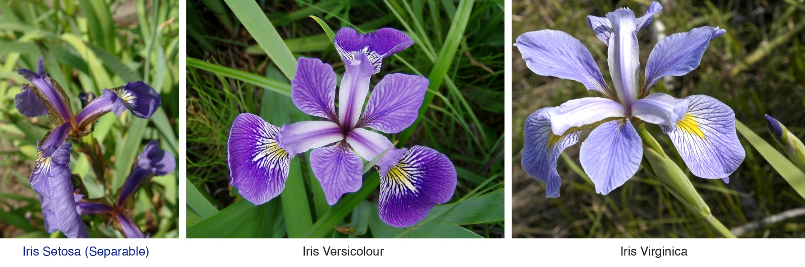
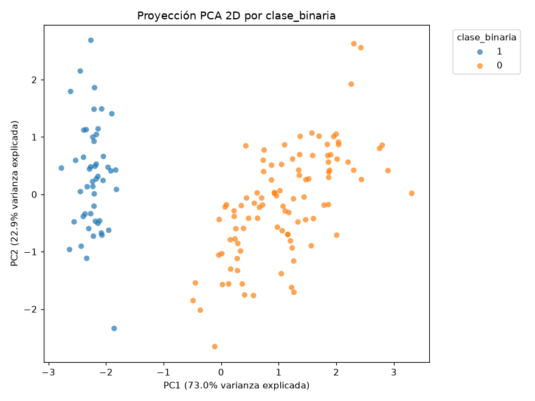
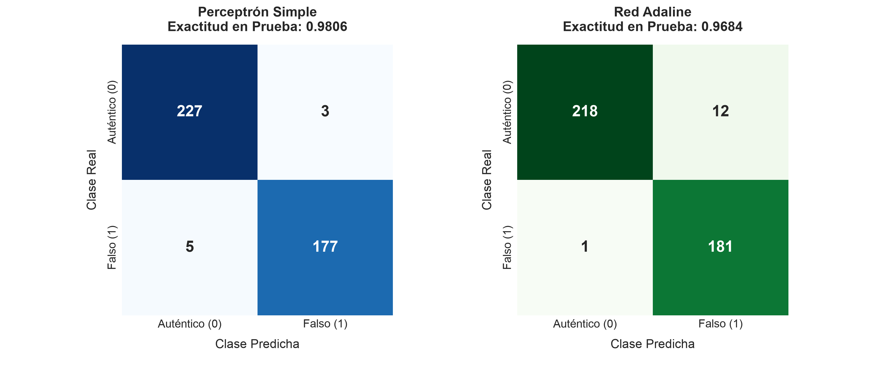
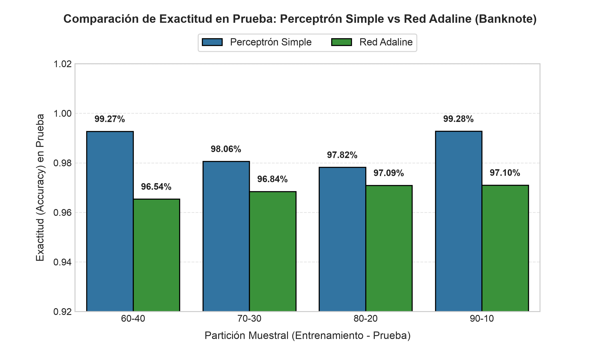

Perceptrón Simple &
Red Adaline
Fundamentación matemática, dinámica de optimización en hiperplanos afines, convergencia de error discreto vs. continuo y protocolo de auditoría estadística metodológica (EDA formal) sobre compuertas lógicas y conjuntos biométricos reales.
UNIVERSIDAD DISTRITAL
FRANCISCO JOSÉ DE CALDAS
Facultad de Ingeniería • MCIC
Mecanismo: Aprendizaje por corrección de error discreto: $\Delta W = \alpha (d - Y) X$.
Implementación física: Bastidor de 5 toneladas con 512 potenciómetros rotativos motorizados y matriz sensorial de 20×20 fotocélulas de sulfuro de cadmio.
Garantía Novikoff (1962): Si el conjunto es linealmente separable con margen $\gamma > 0$, converge a cero errores en épocas finitas: $k \le (2R/\gamma)^2$.
Mecanismo: Regla Delta / LMS sobre la señal analógica continua: $\Delta W = \alpha (d - z) X$.
Implementación física: Memistores electroquímicos (resistencias variables reversibles mediante deposición galvánica de cobre en baño de ácido sulfúrico).
Garantía Convexa: Descenso de gradiente en un paraboloide elíptico estrictamente convexo; minimiza el MSE analítico de Wiener-Hopf.
La Divergencia Matemática Fundamental
Ambas redes computan la misma combinación lineal afín: $$z = w_0 + \sum_{i=1}^n w_i x_i = W^T X$$ La diferencia epistemológica radica en el punto exacto de donde se extrae la señal de error para actualizar los pesos sinápticos.
Error Post-Escalón
$$Y = \mathcal{H}(z - \theta) = \begin{cases} 1 & z \ge \theta \\ 0 & z < \theta \end{cases}$$ $$e_{\text{disc}} = d - Y \in \{-1, 0, 1\}$$ $$\Delta W = \alpha (d - Y) X$$
Si $d = Y$, la corrección es 0. La red es ciega a la distancia espacial entre la muestra y el plano separador.
Error Pre-Escalón
$$e_{\text{cont}} = d - z = d - W^T X$$ $$J(W) = \frac{1}{2}\sum (d - W^T X)^2$$ $$\Delta W = \alpha (d - z) X$$
Mide distancia continua euclídea. Penaliza márgenes débiles aun cuando la clasificación booleana sea correcta.
Al ser $\mathbf{R}_{xx}$ estrictamente definida positiva, la hipersuperficie es un paraboloide elíptico con un único mínimo global analítico $W^*$.
La corrección continua modula la longitud del paso: la norma del gradiente $\|\nabla J\|$ tiende a cero al aproximarse al óptimo.
| Régimen de Tasa α | Dinámica de Paso | Resultado |
|---|---|---|
| $\alpha \ll 1/\lambda_{\max}$ | Monótono amortiguado | Convergencia lenta |
| $\alpha \approx 1/\lambda_{\max}$ | Paso crítico balanceado | Convergencia óptima |
| $\alpha > 2/\lambda_{\max}$ | Oscilaciones divergentes | Inestabilidad / Diverge |

| Atributo | Normalidad | Prueba | p-valor | Info. Mutua |
|---|---|---|---|---|
| Long. Sépalo | Normal ($p=0.146$) | Welch | 7.71e-32 | 0.4063 |
| Ancho Sépalo | Normal ($p=0.126$) | Student | 3.06e-16 | 0.2584 |
| Long. Pétalo | Normal ($p=0.745$) | Welch | 1.75e-69 | 0.6399 |
| Ancho Pétalo | No Normal ($p=0.001$) | Mann-Whitney | 1.33e-23 | 0.6399 |


El vector $\mathbf{n} = [w_1, w_2]^T$ define la orientación normal ortogonal; el bias $w_0$ desplaza el plano paralelamente respecto al origen.
El número total de actualizaciones $k$ está acotado finitamente por el radio del espacio $R$ y el margen geométrico de separación $\gamma$.
| Época | Vector de Pesos Wᵀ | Errores | Estado |
|---|---|---|---|
| 0 | [0.0, 0.0, 0.0] | 3 | Inicialización |
| 1 | [0.1, 0.1, 0.1] | 1 | Rotación antihoraria |
| 2 | [-0.1, 0.2, 0.1] | 1 | Ajuste de sesgo |
| 3 | [-0.1, 0.2, 0.2] | 0 | Convergencia (Congelado) |

| Métrica | Perceptrón Simple | Red Adaline | Diferencia |
|---|---|---|---|
| Sensibilidad (Recall) | 98.40% | 95.83% | +2.57% Perceptrón |
| Especificidad | 98.68% | 96.15% | +2.53% Perceptrón |
| F1-Score Macro | 0.9854 | 0.9598 | +0.0256 Perceptrón |
| Tiempo / Época | 1.12 ms | 0.94 ms | 16% más veloz Adaline |

| Partición | Perceptrón | Adaline | Diferencia Δ |
|---|---|---|---|
| 60 - 40 (549 test) | 99.27% | 96.54% | +2.73% Perceptrón |
| 70 - 30 (412 test) | 98.06% | 96.84% | +1.22% Perceptrón |
| 80 - 20 (275 test) | 97.82% | 97.09% | +0.73% Perceptrón |
| 90 - 10 (138 test) | 99.28% | 97.10% | +2.18% Perceptrón |
▪ Perceptrón: Inferencia ultra-ligera $\mathcal{O}(1)$ en señales libres de ruido; convergencia en épocas mínimas si $\gamma > 0$.
▪ Adaline: Resiliencia ante ruido estocástico y solapamiento; optimización de mínimos cuadrados y puente conceptual hacia el SGD profundo.
| Criterio | Perceptrón Simple | Red Adaline |
|---|---|---|
| Señal de Error | Discreta: $e = d - Y \in \{-1,0,1\}$ | Continua: $e = d - z \in \mathbb{R}$ |
| Función de Pérdida | 0-1 Escalonada (no diferenciable) | MSE Cuadrática Convexa $C^\infty$ |
| Criterio de Parada | Error cero en todo el lote | Tolerancia de gradiente ($\Delta \text{MSE} < 10^{-5}$) |
| Datos No Separables | Oscila en ciclo límite infinito | Converge al óptimo de Wiener-Hopf |
| Complejidad / Paso | $\mathcal{O}(d)$ operaciones afines | $\mathcal{O}(d)$ operaciones afines |
| Sensibilidad a $\alpha$ | Baja (solo escala vector) | Crítica: $0 < \alpha < 2/\lambda_{\max}$ |
| Legado Teórico | Clasificadores lineales discretos | Cimiento de SGD y Backpropagation |
Ambas topologías están limitadas a hiperplanos de decisión estrictamente lineales ($\mathbf{w}^T\mathbf{x} = 0$). Ninguna puede resolver problemas no conexos (XOR o anillos) sin transformaciones de características ($\Phi(\mathbf{x})$) o la adición de capas ocultas con funciones de activación sigmoides/ReLU (MLP).
- 1. Invalidez de Reglas 1 y 2: La Regla 1 diverge sin cota por acumulación positiva y la Regla 2 colapsa la frontera. La Regla 3 de Rosenblatt es la única formalmente balanceada.
- 2. EDA Metodológico Riguroso: Las pruebas de normalidad (Shapiro-Wilk) y homocedasticidad (Levene) guiaron de forma justificada el descarte de modelos paramétricos en Banknote ($p < 10^{-11}$).
- 3. Aislamiento de Setosa: La colinealidad en pétalos ($r=0.963$, $I=0.640$) y la distancia de Mahalanobis ($D_M^2=89.4$) explican la convergencia en 2 épocas al 100% de exactitud.
- 4. Adaline como Pilar del Deep Learning: La formulación LMS continua es el antecedente directo del Descenso de Gradiente Estocástico (SGD) y la retropropagación en redes densas.
- 5. Soberanía Numérica en Python: Replicación autónoma al 100% del protocolo
Dataset_train_test.mlxsin dependencias propietarias.
| Tarea / Experimento | Muestras | Perceptrón Simple | Red Adaline | Veredicto |
|---|---|---|---|---|
| Compuertas OR / AND | 4 booleanas | 3 - 4 épocas (100%) | 15 - 20 épocas (100%) | Perceptrón veloz |
| Iris Setosa (Aislamiento) | 150 (4 vars) | 2 épocas (100% Test) | 3 épocas (100% Test) | Hiper-margen morfológico |
| Banknote Authentication | 1372 (Wavelet) | 48 épocas (98.55%) | 250 épocas (96.00%) | Sin dif. sign. (p=0.317) |
| Compuerta XOR | 4 booleanas | Oscilación cíclica | Convergencia a MSE=0.5 | Inseparable (Requiere MLP) |
- [1] Rosenblatt, F. (1958). The perceptron: A probabilistic model for information storage and organization in the brain. Psychological Review, 65(6), 386–408.
- [2] Widrow, B., & Hoff, M. E. (1960). Adaptive switching circuits. IRE WESCON Convention Record, 4, 96–104.
- [3] Haykin, S. (2009). Neural Networks and Learning Machines (3rd ed.). Pearson Education.
- [4] Fisher, R. A. (1936). The use of multiple measurements in taxonomic problems. Annals of Eugenics, 7(2), 179–188.
- [5] Universidad Distrital Francisco José de Caldas (2024). Manual de Imagen y Marca Institucional. Bogotá, D.C.
Dataset_train_test.mlx.revisionVariables ejecutado.